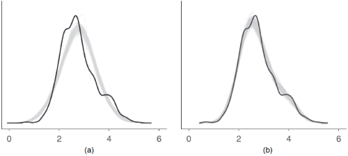

| check_predictions {performance} | R Documentation |
Posterior predictive checks mean "simulating replicated data under the fitted model and then comparing these to the observed data" (Gelman and Hill, 2007, p. 158). Posterior predictive checks can be used to "look for systematic discrepancies between real and simulated data" (Gelman et al. 2014, p. 169).
performance provides posterior predictive check methods for a variety
of frequentist models (e.g., lm, merMod, glmmTMB, ...). For Bayesian
models, the model is passed to bayesplot::pp_check().
check_predictions(object, ...) ## Default S3 method: check_predictions( object, iterations = 50, check_range = FALSE, re_formula = NULL, bandwidth = "nrd", type = "density", verbose = TRUE, ... ) posterior_predictive_check(object, ...) check_posterior_predictions(object, ...)
object |
A statistical model. |
... |
Passed down to |
iterations |
The number of draws to simulate/bootstrap. |
check_range |
Logical, if |
re_formula |
Formula containing group-level effects (random effects) to
be considered in the simulated data. If |
bandwidth |
A character string indicating the smoothing bandwidth to
be used. Unlike |
type |
Plot type for the posterior predictive checks plot. Can be |
verbose |
Toggle warnings. |
An example how posterior predictive checks can also be used for model comparison is Figure 6 from Gabry et al. 2019, Figure 6.

The model shown in the right panel (b) can simulate new data that are more
similar to the observed outcome than the model in the left panel (a). Thus,
model (b) is likely to be preferred over model (a).
A data frame of simulated responses and the original response vector.
Every model object that has a simulate()-method should work with
check_predictions(). On R 3.6.0 and higher, if bayesplot (or a
package that imports bayesplot such as rstanarm or brms)
is loaded, pp_check() is also available as an alias for check_predictions().
Gabry, J., Simpson, D., Vehtari, A., Betancourt, M., and Gelman, A. (2019). Visualization in Bayesian workflow. Journal of the Royal Statistical Society: Series A (Statistics in Society), 182(2), 389–402. https://doi.org/10.1111/rssa.12378
Gelman, A., and Hill, J. (2007). Data analysis using regression and multilevel/hierarchical models. Cambridge; New York: Cambridge University Press.
Gelman, A., Carlin, J. B., Stern, H. S., Dunson, D. B., Vehtari, A., and Rubin, D. B. (2014). Bayesian data analysis. (Third edition). CRC Press.
Gelman, A., Hill, J., and Vehtari, A. (2020). Regression and Other Stories. Cambridge University Press.
simulate_residuals() and check_residuals().
Other functions to check model assumptions and and assess model quality:
check_autocorrelation(),
check_collinearity(),
check_convergence(),
check_heteroscedasticity(),
check_homogeneity(),
check_model(),
check_outliers(),
check_overdispersion(),
check_singularity(),
check_zeroinflation()
# linear model model <- lm(mpg ~ disp, data = mtcars) check_predictions(model) # discrete/integer outcome set.seed(99) d <- iris d$skewed <- rpois(150, 1) model <- glm( skewed ~ Species + Petal.Length + Petal.Width, family = poisson(), data = d ) check_predictions(model, type = "discrete_both")